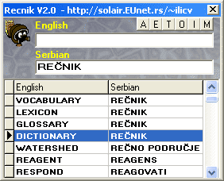

|

|
|
|
Recnik V2.0 - Englesko-Srpski recnik
|
|  |
Autor: Velibor Ilić
Kratak opis: englesko-srpski rečnik.
Operativni sistem: Windows 95/98/ME/NT/XP
Programski jezik: Delphi 6.0
Datum: ©1998-2002. |
Englesko-srpski rečnik, sadrži bazu oko 42600 reči. Program omogućava prevođenje sa engleskog jezika na srpski jezik i obrnuto. Rečnik automatski prevodi reč koja se nalazi Clipboard-u (selektuje se željena reč a zatim se odabere opcija Copy).
|
Rečnik V2.0 (septembar, 2002)
Free Download (1.1MB)
https://www.dropbox.com/s/dcrwi3ft69vsmc7/recnik20.zip?dl=0
|
|
Automatsko trgovanje na tržištu stranih valuta, knjiga o Forex-u, objašnjava šta je berza stranog novca, upoznaje čitaoce sa terminologijom i tehnikama trgovanja na ovakvom tržištu.
Neuronske mreže, šta su neuronske mreže i gde se mogu primeniti? Model veštačkog neurona, model neuronske mreže.
ANN, softver koji omogućava kreiranje i obučavanje neuronskih mreža.
NeuroVCL komponente, komponente koje omogućavaju jednostavnu primenu neuronskih mreža.
Force learn algorithm, modifikovan postupak za obučavanje neuronskih mreža.
Softverski agenti, softverski sistemi izrađeni na bazi tehnologije agenata, klasifikaciji agenata prema funkciji i primeni, poređenje sa objektno orijentisanim programiranjem.
Evolutivni Neuro Agenti, softver koji simulira evolutivno obučavanje agenata koji se kreću unutar lavirinta i izvršavaju postavljene ciljeve.
OCR - prepoznavanje ćiriličnih slova, problemi koji se mogu javiti prilikom izrade softvera za prepoznavanje slova, neka od rešenja koja se mogu primeniti kako bi se prevazišli takvi problemi, primene neuronskih mreža u prepoznavanju slova.
OCR - Softver za prepoznavanje ćiriličnog teksta, softver koji omogućava za prepoznavanje ćiriličnih slova.
Izrada SCADA upotrebom OOP, izrada softvera za nadzor i upravljanje industrijskim sistemima (SCADA) primenom objektno orijentisanih programski jezika.
SmartSCADA, softverski alat koji omogućava izradu sistema za nadzor i upravljanje industrijskim sistemima.
Nanotehnologija Tehnologija 21-vog veka, izrada objekata na molekularnom nivou, materijali izuzetnih karakteristika, uticaj nanotehnologije na svakodnevni život.
|
|
|
|
|
| |